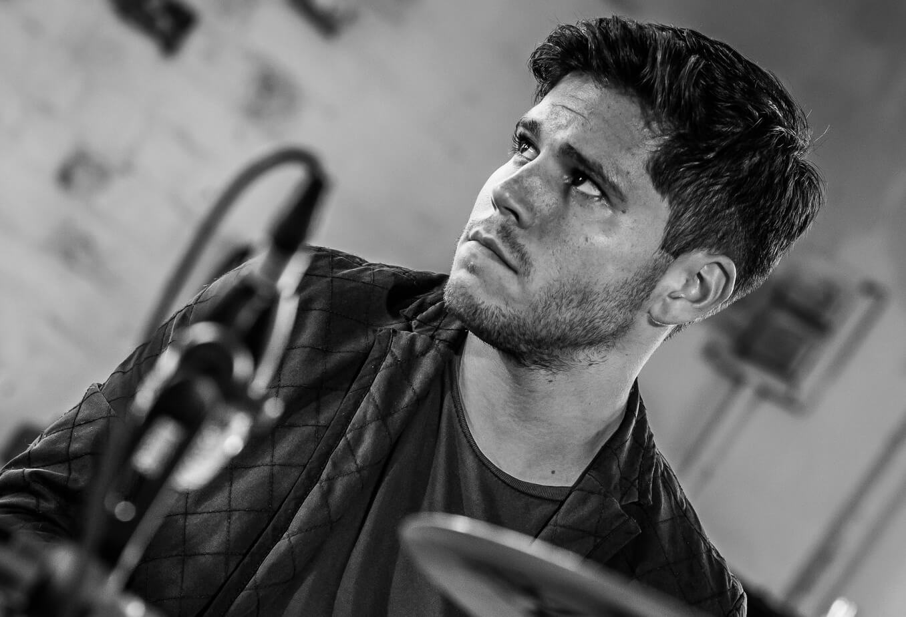

Recording
Our studio utilises the best of analogue and digital technologies to facilitate a smooth and efficient workflow with the unmistakable warmth that great analogue equipment can provide. A Digidesign Control 24 allows a hands-on and tangible workflow, allowing fast and instinctive manipulation in Pro Tools .
We also have a selection of outboard equipment with the legendary Neve-designed Focusrite ISA 430 channel strip as well as an Avalon compressor on hand to deliver beautiful sonic warmth that can only be achieved with real circuitry! We carry a selection of all the classic microphones heard on timeless recordings. These include Neumann, Rode and AKG .
The studio is staffed by experienced engineers Ben Gonzalez and Ross Munro, both of whom have many years of experience in recording, mixing, writing and performing.
-

-
-